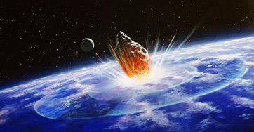
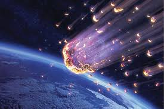
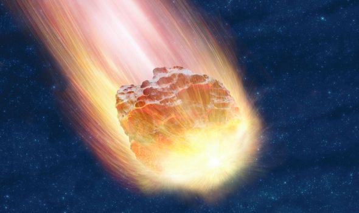
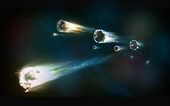

METEOR
Contact Us
News
FAQ
Home
* INFORMATION
A meteor is a streak of light in the sky caused by a meteoroid crashing through Earth’s atmosphere.Meteoroids are lumps of rock or iron that orbit the sun. Most meteoroids are small fragments of rock created by asteroid collisions. Comets also create meteoroids as they orbit the sun and shed dust and debris.
When a meteoroid enters the Earth’s upper atmosphere, it heats up due to friction from the air. The heat causes gases around the meteoroid to glow brightly, and a meteor appears. Meteors are often referred to as shooting stars or falling stars because of the bright tail of light they create as they pass through the sky. Most meteors occur in Earth’s mesosphere, about 50-80 kilometers (31-50 miles) above the Earth's surface.Even the smallest meteors are visible from many kilometers away because of how fast they travel and how brightly they shine. The fastest meteors travel at speeds of 71 kilometers (44 miles) per second.
   